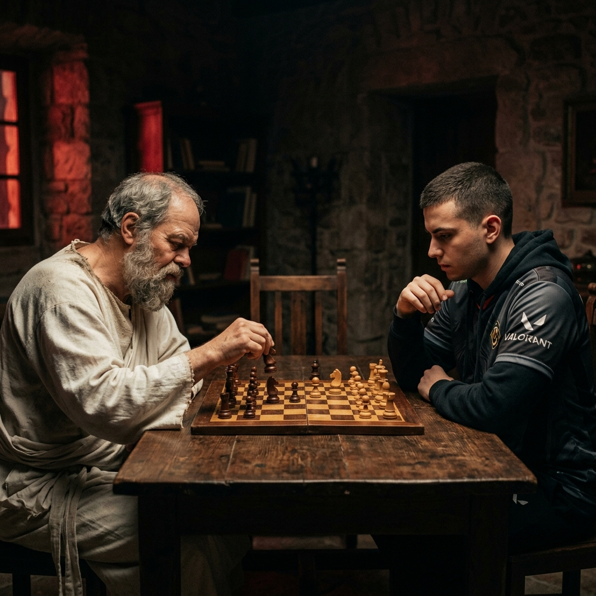

I believe players often already have the answers within them—they just need the right guidance to uncover them. Using a dialogue-based, question-driven approach inspired by maieutics, I aim to stimulate critical thinking and help players reach their own understanding through strategic questioning rather than direct instruction.
My individual VOD analysis helps players reconnect with their intuition while also understanding the team’s overall synergy. It’s an evolving process where the player effectively “brings to life” their own tactical solutions.
"To find yourself, think for yourself."
— Socrates